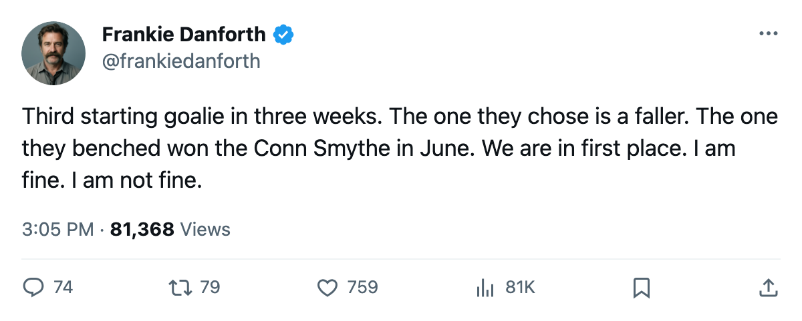
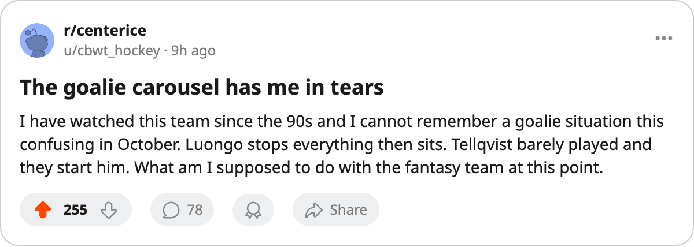

TOR
TORDANFORTH: Code Green, the third starter in three weeks, and 43 shots I cannot explain
The Leafs are first place with 12 points and a goalie situation that would make a rec league blush.
 Frankie DanforthColumnist · Queen City Telegram
Frankie DanforthColumnist · Queen City Telegram
Code Green
The piece
Code Green. First place, 12 points in 8 games, a 3-1 win on Saturday, and I am writing about the goaltending again because nobody else on this desk will say it plainly enough: they just put their fourth-best goalie in the starting crease ahead of a Conn Smythe winner.
Mikael Tellqvist73 is now G1. His Development Index reads -5. He has played 1 game.  Roberto Luongo95 is on the bench with a 97 overall and 5 starts. I do not need you to tell me there is a plan. Every plan that keeps a 97 on the bench for a 73 is a plan I need explained twice.
Roberto Luongo95 is on the bench with a 97 overall and 5 starts. I do not need you to tell me there is a plan. Every plan that keeps a 97 on the bench for a 73 is a plan I need explained twice.
And then Saturday. Florida put 43 shots on net. Toronto managed 17. They won 3-1. I will take the 2 points because the standings say 6-2-0 and nothing else, but a team that gets outshot 43-17 at home has no business winning by 2 goals against a 1-4-1 club. Something is holding. The defence, the goaltending, the luck. I do not know which, and the 43 number sits with me.
On the  New York Rangers game Thursday:
New York Rangers game Thursday:  Jamie Lundmark81 faces the club that let him go in May. He has 0 points in 3 games since coming back.
Jamie Lundmark81 faces the club that let him go in May. He has 0 points in 3 games since coming back.  Kenny Jonsson78 is also back in town wearing a Rangers sweater. The season series reads 1-0-0 Toronto, 6-2 at the Garden. Two games left in this pair of matchups before December.
Kenny Jonsson78 is also back in town wearing a Rangers sweater. The season series reads 1-0-0 Toronto, 6-2 at the Garden. Two games left in this pair of matchups before December.
Boston sits 3 points behind with 2 games in hand and a 3-game win streak. They beat us 3-2 at home on Friday, and if they win both games in hand they pass us. I wrote a column about how the defence looked fine on October 13. The defence is fine. The goaltending is what keeps me awake.
The Bureau has  Marian Gaborik99 at +11 on the Index, the second-highest riser in the league. 99 overall. 2 points in 7 games. $11.90M. I will not write about this again. The +11 says the eye test passes. The points say the board does not. I trust the points.
Marian Gaborik99 at +11 on the Index, the second-highest riser in the league. 99 overall. 2 points in 7 games. $11.90M. I will not write about this again. The +11 says the eye test passes. The points say the board does not. I trust the points.
The second centre is still not there
Petr Chlup87 has 8 points in 8 games and I love him. He is 19. He is not the answer I want because he is not a 200-foot second centre who can play behind  Mats Sundin92 in the playoffs.
Mats Sundin92 in the playoffs.  Brad Richards87 has 6 points in 8 games at 11.5 minutes a night. That is a 4th-line role for a $6.70M man. The sheet has him at H1, which means the coach wants him on the power play, not driving a line. I have been asking for a draw-winning centre since 2004. The answer is still Chlup, and the answer is still not enough.
Brad Richards87 has 6 points in 8 games at 11.5 minutes a night. That is a 4th-line role for a $6.70M man. The sheet has him at H1, which means the coach wants him on the power play, not driving a line. I have been asking for a draw-winning centre since 2004. The answer is still Chlup, and the answer is still not enough.
Code Green. 6-2-0. I will enjoy the win and worry about Thursday.

